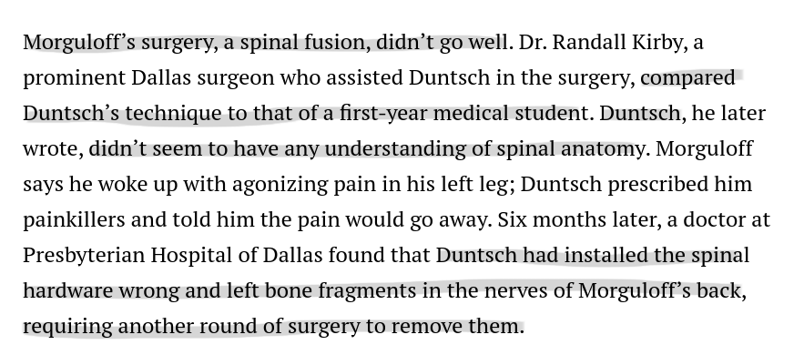
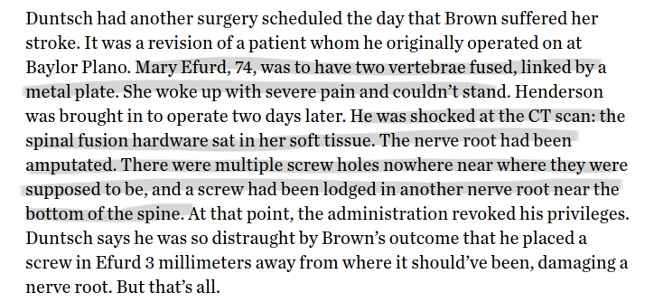

| 1999 | 2009 | 1999 | 2009 | |
|---|---|---|---|---|
| PCPs | 5.8% | 9.9% | 22M | 51M |
| Specialists | 2.9% | 7.3% | 11M | 38M |
| Self-referrals | 6.0% | 2.8% | 51M | 31M |
Learning and Efficiency in the Market for Physician Referrals
Ian McCarthy, Emory University and NBER
Seth Richards-Shubik, Lehigh University and NBER
Seth Richards-Shubik, Lehigh University and NBER
UGA, October 18, 2023
The Story of Dr. Death!

Baylor Plano, 2011, Lee Passmore

Baylor Plano, 2012, Barry Morguloff

Baylor Plano, 2012, Jerry Summers

Baylor Plano, 2012, Kellie Martin

Dallas Medical Center, 2012, Floella Brown

Dallas Medical Center, 2012, Mary Efurd

South Hampton Medical, 2012, Jeff Cheney

Legacy Surgery Center, 2012, Marshall Muse

Legacy Surgery Center, 2012, Jacqueline Troy

Legacy Surgery Center, 2013, Philip Mayfield

University General, 2013, Jeff Glidewell


Motivating question: How did Duntsch keep getting patients?
Research question: Do PCPs learn about specialist quality and adjust referral patterns accordingly?
Why physician referrals?
Physician Referrals
Service market where professionals with general skills (e.g., primary care) direct consumers to professionals with specialized skills
- Substantial heterogeneity in prices and quality across specialists
- Prices do not clear market in the short run
Uncertainty about quality is a defining characteristic of most health care markets:
Uncertainty as to the quality of the product is perhaps more intense here than in any other important commodity.
– Arrow 1963, p. 951
Background on Referrals
- $2 trillion in physician services \(+\) hospital care in 2019
- Primary care accounts for only 5% – 8%
(Reiff et al. 2019, Reid et al. 2019, Martin et al. 2020)
Background on Referrals
(Barnett et al. 2012)
Background on Referrals
- Referring physicians have large influence on choice of specialist
(e.g., Freedman, Kouri, West, and Keating, JAMA Oncology 2015; Chernew, Cooper, Hallock, and Scott Morton, JHlthEcon 2021)
Background on Referrals
- Referring physicians have large influence on choice of specialist
- Referring physicians say patient outcomes and experiences matter
(e.g., Schneider and Epstein, NEJM 1996; Barnett, Keating, Christakis, O’Malley, and Landon, JGenIntMed 2012)
Background on Referrals
- Referring physicians have large influence on choice of specialist
- Referring physicians say patient outcomes and experiences matter
- Specialist market shares are only weakly associated with quality
(Kolstad and Chernew, MedCareRschRev 2009; Dranove, HandbookHlthEcon 2011; Skinner, HandbookHlthEcon 2011; Chandra, Finkelstein, Sacarny, and Syverson, AER 2016; Gaynor, Propper, and Seiler, AER 2016)
Background on Referrals
- Referring physicians have large influence on choice of specialist
- Referring physicians say patient outcomes and experiences matter
- Specialist market shares are only weakly associated with quality
e.g., average marginal rate of substitution between travel distance and mortality risk from heart surgery:
- 1.8 miles : 1 per 100 risk of death (naive model)
- 22 miles : 1 per 100 risk of death (account for supply constraints)
(Richards-Shubik, Roberts, and Donohue, JHlthEcon 2022)
Background on Referrals
- Referring physicians have large influence on choice of specialist
- Referring physicians say patient outcomes and experiences matter
- Specialist market shares are only weakly associated with quality
- Greater concentration of referrals associated with somewhat lower spending and utilization
(Kaur, Perloff, Tompkins, and Bishop, HlthSvcRsch 2017; Agha, Ericson, Geissler, and Rebitzer, MgtSci 2022)
Background on Referrals
- Referring physicians have large influence on choice of specialist
- Referring physicians say patient outcomes and experiences matter
- Specialist market shares are only weakly associated with quality
- Greater concentration of referrals associated with somewhat lower spending and utilization
- Similar results using the density or centrality of networks
(Barnett, Christakis, O’Malley, Onnela, Keating, and Landon, MedCare 2012; Pollack, Weissman, Lemke, Hussey, and Weiner, JGenIntMed 2013)
Our Approach
- Physician practice styles / supply-side factors are a large source of inefficient variations in health care
- Develop a structural learning model for referral decisions and apply it to a specific area of health care with a well defined network of referring physicians and specialists
Model also accounts for:
- Habit persistence (i.e., preference to refer to familiar specialists)
- Congestion / capacity constraints at specialists
Model allows us to quantify:
- How quickly do referring physicians learn about specialist quality?
- How much does quality affect referrals, compared to other factors?
- What is the scope to improve patient allocations, via better learning or information dissemination?
Preliminary Results
- Descriptively, wide variation in specialists’ outcomes, within each geographic market, suggests possible gains from reallocating patients
e.g., average difference btw 75th pctile (bad) and 25 pctile (good) specialist in each market:
- rehospitalization rate: 0.046 (+63% relative)
- spending per patient: $7,900 (+46% relative)
Preliminary Results
- Descriptively, wide variation in specialists’ outcomes, within each geographic market, suggests possible gains from reallocating patients
- Design-based evidence in event study framework
- 0.07 fewer referrals per quarter after bad outcome
- 37% reduction on a mean of 0.187 referrals per quarter among treated pairs
- Applies to PCP-specialist pairs with prior experience, at least one bad outcome, and specialists who receive referrals from multiple PCPs
Preliminary Results
- Descriptively, wide variation in specialists’ outcomes, within each geographic market, suggests possible gains from reallocating patients
- Design-based evidence in event study framework
- Multinomial logits with specialist fixed effects, estimated separately in each geographic market
- One additional bad outcome reduces relative referral probability by 3.4% on average
- Consistent with the learning model, response to bad outcomes is stronger when PCP has more experience with a specialist
Preliminary Results
- Descriptively, wide variation in specialists’ outcomes, within each geographic market, suggests possible gains from reallocating patients
- Design-based evidence in event study framework
- Multinomial logits with specialist fixed effects, estimated separately in each geographic market
- Learning model with Bayesian updating of beliefs about specialist quality
- Small response to bad outcomes on average
- Evidence of learning in some markets
- Results sensitive to prior beliefs about specialist quality
Related Literature
- Structural learning models have been widely applied to study product choice and related problems
(Ching, Erdem, and Keane 2013)
Related Literature
- Structural learning models have been widely applied to study product choice and related problems
- Many studies in economics and marketing have applied Bayesian learning models to prescribing decisions by individual physicians
- New pharmaceutical drugs (e.g., Ching 2010; Ferreyra and Kosenok 2011)
- Patient-specific drug matches (e.g., Crawford and Shum 2005; Dickstein 2021)
- Gong (2018) considers a new surgical procedure
Related Literature
- Structural learning models have been widely applied to study product choice and related problems
- Many studies in economics and marketing have applied Bayesian learning models to prescribing decisions by individual physicians
- Other factors affecting referral choice:
- peers from medical training
- distance between offices
- specialist gender, homophily
- vertical integration
Related Literature
- Structural learning models have been widely applied to study product choice and related problems
- Many studies in economics and marketing have applied Bayesian learning models to prescribing decisions by individual physicians
- Other factors affecting referral choice:
(Hackl, Hummer, and Prickner, JHlthEcon 2015; Richards-Shubik, Roberts, and Donohue, JHlthEcon 2022; Zeltzer, AEJ:Applied 2020; Baker, Bundorf, and Kessler, JHlthEcon 2016; Carlin, Feldman, and Dowd, HlthEcon 2016)
Plan for Today
- Background on application
- Bayesian learning model
- Identification
- Data, description of referral patterns and outcomes
- Design-based results
- Reduced-form multinomial logit results
- Preliminary structural results
Background
Application: Joint Replacement Surgery
- About 500,000 hip replacements and 1,000,000 knee replacements in the US per year (and rapidly growing)
- Expensive: $23,000 mean/median ($12,500 std. dev.)
- Some risk: 9.3% rehospitalized, 0.6% die from complications
Application: Joint Replacement Surgery
- About 500,000 hip replacements and 1,000,000 knee replacements in the US per year (and rapidly growing)
- Expensive: $23,000 mean/median ($12,500 std. dev.)
- Some risk: 9.3% rehospitalized, 0.6% die from complications
- Focus on planned and elective procedures, more likely to involve a referral
Application: Joint Replacement Surgery
- About 500,000 hip replacements and 1,000,000 knee replacements in the US per year (and rapidly growing)
- Expensive: $23,000 mean/median ($12,500 std. dev.)
- Some risk: 9.3% rehospitalized, 0.6% die from complications
- Focus on planned and elective procedures, more likely to involve a referral
- Patients are typically referred by their primary care physicians (PCPs) to orthopedic surgeons (specialists) for the procedure
Model
PCPs refer a sequence of patients to a set of specialists, and learn about the quality of those specialists from the outcomes of their patients
Actions and Outcomes
- Each period \(t\), the PCP \(i\) sends a patient (also \(t\)) to a specialist \(j\) from a fixed choice set \(J\)
- choice indicators: \(D_{ijt} = \{0,1\}\), \(j \in J\)
Actions and Outcomes
- Each period \(t\), the PCP \(i\) sends a patient (also \(t\)) to a specialist \(j\) from a fixed choice set \(J\)
- Specialist treats the patient
- binary outcomes: \(Y_{ijt} = 1\) (success) or 0 (failure)
- specialist quality: \(q_j \equiv \Pr(Y_{ijt} = 1)\)
Actions and Outcomes
- Each period \(t\), the PCP \(i\) sends a patient (also \(t\)) to a specialist \(j\) from a fixed choice set \(J\)
- Specialist treats the patient
- Patients sent to specialist \(j\) in the past may affect the PCP’s utility (e.g., familiarity)
- previous patients: \(e_{ijt} \equiv \sum_{s=0}^{t-1} D_{ist}\)
Actions and Outcomes
- Each period \(t\), the PCP \(i\) sends a patient (also \(t\)) to a specialist \(j\) from a fixed choice set \(J\)
- Specialist treats the patient
- Patients sent to specialist \(j\) in the past may affect the PCP’s utility (e.g., familiarity)
- Specialist’s prior patients may affect the choice probability (e.g., capacity constraints)
- specialist’s current patients: \(n_{jt} \equiv \sum_k D_{kjt}\)
Learning about Quality
- Bayesian learning, multi-armed bandit framework
- Beta-binomial model, as proposed in the literature to study physician learning and treatment variations (Phelps and Mooney 1992)
- Gittins index (Gittins 1979, Gittins and Jones 1979) provides highly tractable solution for forward looking model
Learning about Quality
- Bayesian learning, multi-armed bandit framework
- PCP beliefs about specialist quality: \(q_j \sim \text{Beta}(a,b)\)
- common, homogeneous priors: \((a_0, b_0)\)
- updating beliefs from patient outcomes:
\[a_{ijt} = a_0 + \sum_{s=1}^t Y_{ijs} , \ \ b_{ijt} = b_0 + \sum_{s=1}^t (D_{ijs} - Y_{ijs})\]
Learning about Quality
- Bayesian learning, multi-armed bandit framework
- PCP beliefs about specialist quality: \(q_j \sim \text{Beta}(a,b)\)
- Relationship to the existing literature
- Normal-normal models of prescribing (e.g., Crawford and Shum 2005, Ching 2010, Ferreyra and Kosenok 2011): choice sets binary to moderate size (\(\sim\) 5-7), observe sequence of choices but not outcomes
- Beta-binomial models with Gittins index solutions:
- Dickstein (2021), antidepressants – larger choice set (19), nested structure with correlated beliefs, outcomes not observed
- Gong (2018), brain surgery – 3 options, learning by doing
Referring Physician’s Utility
- PCP \(i\) utility from sending patient \(t\) to specialist \(j\) (at date \(t\)):
\[U_{ijt} \equiv \alpha Y_{ijt} + f(e_{ijt}) + c(n_{jt}, z_j) + u(x_{ijt}) + \xi_j + \epsilon_{ijt}\]
Referring Physician’s Utility
- PCP \(i\) utility from sending patient \(t\) to specialist \(j\) (at date \(t\)):
\[U_{ijt} \equiv \alpha Y_{ijt} + f(e_{ijt}) + c(n_{jt}, z_j) + u(x_{ijt}) + \xi_j + \epsilon_{ijt}\]
\(\alpha\) – weight on patient outcomes (e.g., altruism)
\(f\) – subjective taste for familiarity
\(x\) – patient-specific factors (e.g., distance)
\(c\) – congestion effect (specialists have limited supply)
\(z\) – factors affecting capacity (e.g., max operating days per month)
\(\xi\) – other demand factors (unobserved to econometrician)
\(\epsilon\) – idiosyncratic shock
Referring Physician’s Utility
- PCP \(i\) utility from sending patient \(t\) to specialist \(j\) (at date \(t\)):
\[U_{ijt} \equiv \alpha Y_{ijt} + f(e_{ijt}) + c(n_{jt}, z_j) + u(x_{ijt}) + \xi_j + \epsilon_{ijt}\]
- Setup captures key features related to the potential to improve market allocations:
- learning about quality
- taste for familiarity
- capacity constraints
Myopic PCPs
\[\max_{j \in J} \ \text{E} \left[ U_{ijt} | \dots \right] = \max_{j \in J} \text{ } \alpha m_{ijt} + f(e_{ijt}) + c(n_{jt}, z_j) + u(x_{ijt}) + \xi_j + \epsilon_{ijt}\]
Use mean belief at start of period \(t\):
\[m_{ijt} \equiv E \left[q_j | (D_{ijs}, Y_{ijs})_{s=1}^{t-1} \right] = \frac{ a_{ij,t-1} }{ a_{ij,t-1} + b_{ij,t-1} } = \frac{ a_0 + \sum_{s=1}^{t-1} Y_{ijs} }{ a_0 + b_0 + \sum_{s=1}^{t-1} D_{ijs} }\]
Identification in Myopic Model
\[\alpha m_{ijt} + f(e_{ijt}) + c(n_{jt}, z_j) + u(x_{ijt}) + \xi_j + \epsilon_{ijt}\]
- Assume a known distribution for \(\epsilon\)
Identification in Myopic Model
\[\alpha m_{ijt} + f(e_{ijt}) + c(n_{jt}, z_j) + u(x_{ijt}) + \xi_j + \epsilon_{ijt}\]
- Assume a known distribution for \(\epsilon\)
- Choice probabilities identify differences in utility between alternatives
- Specialist fixed effects, \(\xi\), identified by cases where histories and observables are the same for two specialists
- Effects of patient characteristics, \(u(x)\): assume patients arrive exogenously
Identification in Myopic Model
\[\alpha m_{ijt} + f(e_{ijt}) + c(n_{jt}, z_j) + u(x_{ijt}) + \xi_j + \epsilon_{ijt}\]
- Assume a known distribution for \(\epsilon\)
- Choice probabilities identify differences in utility between alternatives
- Congestion effect \(c(n, z)\) identified with distance-based instrument
(Richards-Shubik et al. 2022), see congestion details
Identification in Myopic Model
\[\alpha m_{ijt} + f(e_{ijt}) + c(n_{jt}, z_j) + u(x_{ijt}) + \xi_j + \epsilon_{ijt}\]
- Assume a known distribution for \(\epsilon\)
- Choice probabilities identify differences in utility between alternatives
- Congestion effect \(c(n, z)\) identified with distance-based instrument
- Effect of familiarity (\(f\)) identified from variation in experience with different specialists
- Requires a normalization, e.g.~\(f(0) = 0\)
- Must be bounded as \(e \rightarrow \infty\)
Identification in Myopic Model
\[\alpha m_{ijt} + f(e_{ijt}) + c(n_{jt}, z_j) + u(x_{ijt}) + \xi_j + \epsilon_{ijt}\]
- Altruism parameter (\(\alpha\)): identified by variation in observed success rate \[\alpha m_{ijt} = \alpha \frac{ a_0 + \sum_{s=1}^{t-1} Y_{ijs} }{ a_0 + b_0 + \sum_{s=1}^{t-1} D_{ijs} } = \alpha \frac{ a_0/e_{ijt} + \bar y_{ijt} }{ (a_0 + b_0)/e_{ijt} + 1 }\]
where \(\bar y_{ijt} \equiv \sum_{s=1}^{t-1} Y_{ijs} / \sum_{s=1}^{t-1} D_{ijs}\) (and \(e_{ijt} \equiv \sum_{s=1}^{t-1} D_{ijs}\))
Identification in Myopic Model
\[\alpha m_{ijt} + f(e_{ijt}) + c(n_{jt}, z_j) + u(x_{ijt}) + \xi_j + \epsilon_{ijt}\]
- Altruism parameter (\(\alpha\)): identified by variation in observed success rate \[\alpha m_{ijt} = \alpha \frac{ a_0 + \sum_{s=1}^{t-1} Y_{ijs} }{ a_0 + b_0 + \sum_{s=1}^{t-1} D_{ijs} } = \alpha \frac{ a_0/e_{ijt} + \bar y_{ijt} }{ (a_0 + b_0)/e_{ijt} + 1 }\]
Both Dickstein (2021) and Gong (2018) omit \(\alpha\), which fixes the MRS between patient outcomes and other factors (incl. \(\epsilon\)) at an assumed value
Identification in Myopic Model
\[\alpha m_{ijt} + f(e_{ijt}) + c(n_{jt}, z_j) + u(x_{ijt}) + \xi_j + \epsilon_{ijt}\]
- Altruism parameter (\(\alpha\)): identified by variation in observed success rate \[\alpha m_{ijt} = \alpha \frac{ a_0 + \sum_{s=1}^{t-1} Y_{ijs} }{ a_0 + b_0 + \sum_{s=1}^{t-1} D_{ijs} } = \alpha \frac{ a_0/e_{ijt} + \bar y_{ijt} }{ (a_0 + b_0)/e_{ijt} + 1 }\]
- Strength of priors (\(a_0 + b_0\)): how the marginal effect of the success rate changes with experience (i.e., interaction), see algebra
Identification in Myopic Model
\[\alpha m_{ijt} + f(e_{ijt}) + c(n_{jt}, z_j) + u(x_{ijt}) + \xi_j + \epsilon_{ijt}\]
- Altruism parameter (\(\alpha\)): identified by variation in observed success rate \[\alpha m_{ijt} = \alpha \frac{ a_0 + \sum_{s=1}^{t-1} Y_{ijs} }{ a_0 + b_0 + \sum_{s=1}^{t-1} D_{ijs} } = \alpha \frac{ a_0/e_{ijt} + \bar y_{ijt} }{ (a_0 + b_0)/e_{ijt} + 1 }\]
- Strength of priors (\(a_0 + b_0\)): how the marginal effect of the success rate changes with experience (i.e., interaction), see algebra
- Prior mean (\(\frac{a_0}{a_0 + b_0}\)): estimate outside the model, using average success probability in each market (then have \(a_0, b_0\) separately)
Forward-looking PCPs
\[V_{it}(\dots) = \max_{j \in J} \ \left\{ \text{E} \left[ U_{ijt} | \dots \right] + \beta \text{E} V_{i,t+1}(\dots) \right\}\]
Forward-looking PCPs
\[V_{it}(\dots) = \max_{j \in J} \ \left\{ \text{E} \left[ U_{ijt} | \dots \right] + \beta \text{E} V_{i,t+1}(\dots) \right\}\]
- Gittins index solution (Gittins 1979) for present discounted value of optimal returns from specialist \(j\), denoted \(g(m_{ijt}, v_{ijt})\), if:
Forward-looking PCPs
\[V_{it}(\dots) = \max_{j \in J} \ \left\{ \text{E} \left[ U_{ijt} | \dots \right] + \beta \text{E} V_{i,t+1}(\dots) \right\}\]
- Gittins index solution (Gittins 1979) for present discounted value of optimal returns from specialist \(j\), denoted \(g(m_{ijt}, v_{ijt})\), if:
- one option is chosen at a time
- the unchosen options do not affect the current outcome
- the expected returns do not change for the unchosen options
- beliefs are independent across options
(\(q_j\) fixed, no spillovers among surgeons \(\implies\) 3 & 4) - Brezzi and Lai (2002) provide a closed-form approximation to \(g\)
Forward-looking PCPs
\[V_{it}(\dots) = \max_{j \in J} \ \left\{ \text{E} \left[ U_{ijt} | \dots \right] + \beta \text{E} V_{i,t+1}(\dots) \right\}\]
- Gittins index solution (Gittins 1979): \[V_{it}(\dots) =\max_{j \in J} \text{ } \alpha g(m_{ijt}, v_{ijt}) + \overline{\overline{f}}(e_{ijt}) + c(n_{jt}, z_j) + u(x_{ijt}) + \xi_j + \epsilon_{ijt},\]
where \(\overline{\overline{f}}\) is the present discounted value of familiarity with \(j\)
Identification in Forward-looking Model
\[\alpha g(m_{ijt}, v_{ijt}) + \overline{\overline{f}}(e_{ijt}) + c(n_{jt}, z_j) + u(x_{ijt}) + \xi_j + \epsilon_{ijt}\]
- \(u(x_{ijt})\), \(c(n_{jt}, z_j)\), \(\xi_j\): same as for myopic model (no dynamics)
Identification in Forward-looking Model
\[\alpha g(m_{ijt}, v_{ijt}) + \overline{\overline{f}}(e_{ijt}) + c(n_{jt}, z_j) + u(x_{ijt}) + \xi_j + \epsilon_{ijt}\]
- \(u(x_{ijt})\), \(c(n_{jt}, z_j)\), \(\xi_j\): same as for myopic model (no dynamics)
- Gittins index is a known transformation of \(m\) and \(v\), where:
\[v \equiv \frac{ a \, b } { (a + b)^2 (a + b + 1) }= \frac{m \, (1-m)}{a_0 + b_0 + e + 1}, \text{and } m = \frac{ a_0 + e \times \bar y} { a_0 + b_0 + e }\]
Identification in Forward-looking Model
\[\alpha g(m_{ijt}, v_{ijt}) + \overline{\overline{f}}(e_{ijt}) + c(n_{jt}, z_j) + u(x_{ijt}) + \xi_j + \epsilon_{ijt}\]
- \(u(x_{ijt})\), \(c(n_{jt}, z_j)\), \(\xi_j\): same as for myopic model (no dynamics)
- Gittins index is a known transformation of \(m\) and \(v\)
- Hence, \(\alpha g(m,v)\) is a function of the same unknown parameters (\(\alpha, a_0, b_0\)) and observables (\(e, \bar y\)) as the analogous term (\(\alpha m\)) in the myopic model
Counterfactuals
- Faster learning: reduce strength of priors: e.g., \((a_0, b_0) \rightarrow (a_0 / 2, b_0 / 2)\)
- Complete information: replace \(g(m_{ijt}, v_{ijt})\) with \(g(q_j, 0)\) (measures losses due to uncertainty about quality)
- Forced (or incentivized) experimentation: assign some fraction of patients to exogenously selected specialists
Counterfactuals
- Faster learning
- Complete information
- Forced (or incentivized) experimentation
- Use estimated model to compute aggregate changes in health outcomes and expenditures
- accounting for congestion / capacity at each specialist
- and for habit persistence, taste for familiarity
Data
FFS Medicare Claims, 2008-2018
- All fee-for-service Medicare claims for planned and elective major joint replacements from 2008 to 2018: 4.5 million surgeries
FFS Medicare Claims, 2008-2018
- All fee-for-service Medicare claims for planned and elective major joint replacements from 2008 to 2018: 4.5 million surgeries
- Referring physician (PCP) inferred from regular office visits over prior year (2 or more visits)
- 87% of surgeries are matched to a PCP
- Restrict to PCPs and orthopedic surgeons with sufficient volume
- 2,014,300 surgeries; 10,500 orthopedic surgeons; and 51,700 PCPs in final sample
FFS Medicare Claims, 2008-2018
- All fee-for-service Medicare claims for planned and elective major joint replacements from 2008 to 2018: 4.5 million surgeries
- Referring physician (PCP) inferred from regular office visits over prior year (2 or more visits)
- 87% of surgeries are matched to a PCP
- Restrict to PCPs and orthopedic surgeons with sufficient volume
- 2,014,300 surgeries; 10,500 orthopedic surgeons; and 51,700 PCPs in final sample
Key Summary Statistics
per patient (episode)
| 2008-2012 | 2013-2018 | Overall | |
|---|---|---|---|
| 90-day Readmission | 0.104 | 0.085 | 0.093 |
| 90-day Complication | 0.014 | 0.013 | 0.013 |
| 90-day Mortality | 0.007 | 0.005 | 0.006 |
| Any Failure | 0.108 | 0.088 | 0.096 |
| Episode spending | 23,240 | 22,557 | 22,839 |
| (12,717) | (12,284) | (12,469) |
Key Summary Statistics
per PCP (per year)
| 2008-2012 | 2013-2018 | Overall | |
|---|---|---|---|
| Total Referrals | 3.809 | 4.398 | 4.134 |
| (2.940) | (3.478) | (3.261) | |
| Unique Specialists | 2.666 | 3.109 | 2.910 |
| (1.580) | (1.831) | (1.737) |
Key Summary Statistics
per PCP-specialist pair (five-year estimation period)
| 2008-2012 | 2013-2018 | Overall | |
|---|---|---|---|
| Total Referrals | - - - | 4.445 | - - - |
| (10.453) | |||
| Failure Rate | - - - | 0.107 | - - - |
| (0.209) |
Referral Concentration
Computed per PCP, using six years of data from 2013-2018


Heterogeneity in Quality and Cost
Interquartile ranges within markets of negative outcomes and episode spending


Empirical Analysis
Design-based Evidence of Learning
Effect on referrals per quarter from PCP observing the failure vs. other PCPs
- Within each specialist, compute the difference in referral rates between PCPs who did not observe first failure and PCP who did
Design-based Evidence of Learning
Effect on referrals per quarter from PCP observing the failure vs. other PCPs
- Within each specialist, compute the difference in referral rates between PCPs who did not observe first failure and PCP who did
- Define: \(I_j\) = PCPs who ever refer to specialist \(j\); \(F_j\) = PCP who observes first failure (at time \(t_j^1\)); and \(C_j = I_j \setminus F_j\)
- Compute referral rates from \(C_j\) and \(F_j\) to \(j\) in each quarter: \(\bar d^C_{jt}\), \(\bar d^F_{jt}\)
- Take the difference in each quarter, up to the time when the specialist has a second failure: \(\bar d^F_{jt} - \bar d^C_{jt}\), \(t = t_j^0 \dots (t_j^2 - 1\))
- Compute the average difference across specialists, using quarters relative to first failure (\(q = t - t^1_j\))
Design-based Evidence of Learning
Effect on referrals per quarter from PCP observing the failure vs. other PCPs
- Within each specialist, compute the difference in referral rates between PCPs who did not observe first failure and PCP who did
- Corresponds to the following specification: \[D_{ijt} = \alpha_{jt} I_{ij} + \gamma F_{ij} + \sum_{q = -9}^{Q_j} \beta_q F_{ij} 1(t - t_j^1 = q) + U_{ijt},\] where \(I_{ij} = 1(i \in I_j)\) and \(F_{ij} = 1(i \in F_j)\)
Design-based Evidence of Learning
Effect on referrals per quarter from PCP observing the failure vs. other PCPs
- Within each specialist, compute the difference in referral rates between PCPs who did not observe first failure and PCP who did
- Corresponds to the following specification: \[D_{ijt} = \alpha_{jt} I_{ij} + \gamma F_{ij} + \sum_{q = -9}^{Q_j} \beta_q F_{ij} 1(t - t_j^1 = q) + U_{ijt},\] where \(I_{ij} = 1(i \in I_j)\) and \(F_{ij} = 1(i \in F_j)\)
- Estimate as stacked DD over first four failures
Design-based Estimation

Design-based Estimation
- Estimated reduction of 0.07 referrals per quarter
- Relative reduction of 37%
- Unique sample but strong evidence of a response in certain circumstances
Multinomial Logit with Specialist Fixed Effects
\[\Pr \left( j \, | \, \dots \right) = \frac{\exp \left( \pi_1 \bar y_{ijt} + \pi_2 \bar y_{ijt} \bar e_{ijt} + \pi_3 \bar e_{ijt} + \pi_4 x_{ijt} + \xi_j \right)}{\sum_{k \in J{it}} \exp \left( \pi_1 \bar y_{ikt} + \pi_2 \bar y_{ikt} \bar e_{ikt} + \pi_3 \bar e_{ikt} + \pi_4 x_{ikt} + \xi_k \right)}\]
Multinomial Logit with Specialist Fixed Effects
\[\Pr \left( j \, | \, \dots \right) = \frac{\exp \left( \pi_1 \bar y_{ijt} + \pi_2 \bar y_{ijt} \bar e_{ijt} + \pi_3 \bar e_{ijt} + \pi_4 x_{ijt} + \xi_j \right)}{\sum_{k \in J{it}} \exp \left( \pi_1 \bar y_{ikt} + \pi_2 \bar y_{ikt} \bar e_{ikt} + \pi_3 \bar e_{ikt} + \pi_4 x_{ikt} + \xi_k \right)}\]
- Variable (re-)definitions
\(\bar y_{ijt}\) – failure rate among patients sent to \(j\) over past five years
\(\bar e_{ijt}\) – proportion of patients sent to \(j\) over past five years
\(x_{ijt}\) – relative distance from patient to hospital where \(j\) primarily operates
Multinomial Logit with Specialist Fixed Effects
\[\Pr \left( j \, | \, \dots \right) = \frac{\exp \left( \pi_1 \bar y_{ijt} + \pi_2 \bar y_{ijt} \bar e_{ijt} + \pi_3 \bar e_{ijt} + \pi_4 x_{ijt} + \xi_j \right)}{\sum_{k \in J{it}} \exp \left( \pi_1 \bar y_{ikt} + \pi_2 \bar y_{ikt} \bar e_{ikt} + \pi_3 \bar e_{ikt} + \pi_4 x_{ikt} + \xi_k \right)}\]
- Variable (re-)definitions
- Choice set (\(J_{it}\)): all specialists in market who operate in same year and are within 75 miles of patient
Multinomial Logit with Specialist Fixed Effects
\[\Pr \left( j \, | \, \dots \right) = \frac{\exp \left( \pi_1 \bar y_{ijt} + \pi_2 \bar y_{ijt} \bar e_{ijt} + \pi_3 \bar e_{ijt} + \pi_4 x_{ijt} + \xi_j \right)}{\sum_{k \in J{it}} \exp \left( \pi_1 \bar y_{ikt} + \pi_2 \bar y_{ikt} \bar e_{ikt} + \pi_3 \bar e_{ikt} + \pi_4 x_{ikt} + \xi_k \right)}\]
- Variable (re-)definitions
- Choice set (\(J_{it}\)): all specialists in market who operate in same year and are within 75 miles of patient
- Identifying variation comes from differences in patient histories across PCPs in outcomes of patients sent to same specialists
Multinomial Logit with Specialist Fixed Effects
\[\Pr \left( j \, | \, \dots \right) = \frac{\exp \left( \pi_1 \bar y_{ijt} + \pi_2 \bar y_{ijt} \bar e_{ijt} + \pi_3 \bar e_{ijt} + \pi_4 x_{ijt} + \xi_j \right)}{\sum_{k \in J{it}} \exp \left( \pi_1 \bar y_{ikt} + \pi_2 \bar y_{ikt} \bar e_{ikt} + \pi_3 \bar e_{ikt} + \pi_4 x_{ikt} + \xi_k \right)}\]
- Variable (re-)definitions
- Choice set (\(J_{it}\)): all specialists in market who operate in same year and are within 75 miles of patient
- Identifying variation comes from differences in patient histories across PCPs in outcomes of patients sent to same specialists
- Estimated separately in each geographic market (HRR)
Distribution of Logit Coefficient Estimates
Percentiles
|
||||||
|---|---|---|---|---|---|---|
| Nat'l Avg. | 10 | 25 | 50 | 75 | 90 | |
| Past failures (prop.) | 1.002 | 0.515 | 0.760 | 1.012 | 1.302 | 1.482 |
| Interaction | -4.472 | -7.020 | -6.056 | -4.588 | -3.018 | -1.763 |
| Past patients (prop.) | 5.752 | 3.998 | 4.750 | 5.642 | 6.889 | 7.672 |
| Distance (miles) | -0.100 | -0.141 | -0.121 | -0.097 | -0.078 | -0.064 |
Distribution of Logit Coefficient Estimates
- With national average coef’s, the marginal effect of failure rate is negative if at least 22.4% of past patients have been sent to a specialist
- Negative interaction term is consistent with the learning model (e.g., effect of failure rate in myopic model):
\[\alpha m_{ijt} = \alpha \frac{ a_0 }{ (a_0 + b_0) + e_{ijt} } + \alpha \frac{ e_{ijt} }{ (a_0 + b_0) + e_{ijt} } \times \bar y_{ijt}\]
Distribution of Marginal Effects

Negative Response in 63/297 (21%) of Markets
National Averages
| Variable | Patient-Weighted | Unweighted |
|---|---|---|
| Past failures | -0.0502 | -0.0396 |
| (0.0027) | (0.0038) | |
| Past patients | 0.7481 | 0.7047 |
| (0.0026) | (0.0030) |
Interpretation:
- 4.445 referrals per pair (over six years)
- 1 failure / 4.445 = 0.225 increase in failure rate
- 0.33 average share of referrals sent to most chosen specialist
- 0.225 x 0.0502 / 0.33 = 3.4% relative reduction
Preliminary Learning Results
Recall utility function: \[\text{E}[u_{ijt}] = \alpha m_{ijt} + f(e_{ijt}) + c(n_{jt}, z_j) + u(x_{ijt}) + \xi_j + \epsilon_{ijt} \text{, with}\]
\[\alpha m_{ijt} = \alpha \frac{ a_0 + \sum_{s=1}^{t-1} Y_{ijs} }{ a_0 + b_0 + \sum_{s=1}^{t-1} D_{ijs} } = \alpha \frac{ a_0/e_{ijt} + \bar y_{ijt} }{ (a_0 + b_0)/e_{ijt} + 1 }\]
- Strength of priors (\(a_0 + b_0\)): how the marginal effect of the success rate changes with experience (i.e., interaction), see algebra
- Prior mean (\(\frac{a_0}{a_0 + b_0}\)): estimate outside the model, using average success probability in each market (then have \(a_0, b_0\) separately)
Preliminary Learning Results
Recall utility function: \[\text{E}[u_{ijt}] = \alpha m_{ijt} + f(e_{ijt}) + c(n_{jt}, z_j) + u(x_{ijt}) + \xi_j + \epsilon_{ijt}\]
- Preliminary results focus on \(\alpha\), \(\xi_{j}\), \(c(n_{jt},z_{j})\)
- excludes \(f(e_{ijt})\)
- includes only differential distance in \(x_{ijt}\)
- This is a proof of concept for the learning model with congestion
Preliminary Learning Results
Recall utility function: \[\text{E}[u_{ijt}] = \alpha m_{ijt} + f(e_{ijt}) + c(n_{jt}, z_j) + u(x_{ijt}) + \xi_j + \epsilon_{ijt}\]
- Preliminary results focus on \(\alpha\), \(\xi_{j}\), \(c(n_{jt},z_{j})\)
- Prior mean, \(\frac{a_{0}}{a_{0} + b_{0}}\), set to average success rate in each HRR
Preliminary Learning Results
Recall utility function: \[\text{E}[u_{ijt}] = \alpha m_{ijt} + f(e_{ijt}) + c(n_{jt}, z_j) + u(x_{ijt}) + \xi_j + \epsilon_{ijt}\]
- Preliminary results focus on \(\alpha\), \(\xi_{j}\), \(c(n_{jt},z_{j})\)
- Prior mean, \(\frac{a_{0}}{a_{0} + b_{0}}\), set to average success rate in each HRR
- Estimate for different prior strengths, \(\eta=a_{0} + b_{0}\)
- 1: weak prior
- 5: moderate prior
- 10: strong prior
- 20: very strong prior
Preliminary Learning Results
Partial effect among PCP’s most frequently selected surgeon
Percentiles
|
|||||||
|---|---|---|---|---|---|---|---|
| Prior | Nat'l Avg. | Std. Dev | 10 | 20 | 50 | 70 | 90 |
| 1 | -1e-04 | 0.0066 | -0.0070 | -0.0035 | 2e-04 | 0.0022 | 0.0065 |
| 5 | -9e-04 | 0.0053 | -0.0070 | -0.0042 | -5e-04 | 0.0013 | 0.0046 |
| 10 | -9e-04 | 0.0049 | -0.0066 | -0.0042 | -6e-04 | 0.0012 | 0.0043 |
| 20 | -7e-04 | 0.0048 | -0.0062 | -0.0040 | -5e-04 | 0.0014 | 0.0045 |
Preliminary Learning Results
Partial effect among all surgeon’s ever referred to
Percentiles
|
|||||||
|---|---|---|---|---|---|---|---|
| Prior | Nat'l Avg. | Std. Dev | 10 | 20 | 50 | 70 | 90 |
| 1 | -0.0020 | 0.0055 | -0.0080 | -0.0049 | -0.0012 | 3e-04 | 0.0028 |
| 5 | -0.0015 | 0.0039 | -0.0057 | -0.0037 | -0.0010 | 3e-03 | 0.0058 |
| 10 | -0.0010 | 0.0035 | -0.0048 | -0.0031 | -0.0007 | 5e-04 | 0.0022 |
| 20 | -0.0006 | 0.0033 | -0.0041 | -0.0027 | -0.0004 | 8e-04 | 0.0068 |
Preliminary Learning Results
Partial effect in responsive markets
| Absolute | Relative | ||||
|---|---|---|---|---|---|
| Prior | 70th | 90th | 70th | 90th | |
| Most frequent surgeon (mean referral prob. = 0.41) | |||||
| 5 | 0.0013 | 0.0046 | 0.32% | 1.12% | |
| 20 | 0.0014 | 0.0045 | 0.34% | 1.10% | |
| All surgeons ever used (mean referral prob. = 0.13) | |||||
| 5 | 0.0030 | 0.0058 | 2.31% | 4.46% | |
| 20 | 0.0008 | 0.0068 | 0.62% | 5.23% | |
Preliminary Learning Results
Evidence of congestion effects (per 100 patients)
| Congestion | Distance | ||||||
|---|---|---|---|---|---|---|---|
| Prior | Nat’l Est | Std. Err. | Marg. Eff. | Nat’l Mean | Std. Dev. | Marg. Eff. | |
| 1 | -0.042 | 0.021 | -0.010 | -0.106 | 0.006 | -0.026 | |
| 5 | -0.042 | 0.021 | -0.010 | -0.106 | 0.006 | -0.026 | |
| 10 | -0.039 | 0.021 | -0.009 | -0.106 | 0.004 | -0.026 | |
| 20 | -0.039 | 0.021 | -0.009 | -0.080 | 0.005 | -0.019 | |
Summary
- Substantial improvements would be possible if referrals can be reallocated within geographic areas
- Structural learning model can quantify losses due to uncertainty and project gains from possible reallocation
- Design-based evidence of learning: PCPs respond to negative outcomes by reducing referrals to specialists
- Structural model is identified, but more work to understand role of priors and familiarity
Thank You!
Ian McCarthy, Emory University & NBER
ianmcccarthyecon.com
ian.mccarthy@emory.edu
Appendix
Congestion Effect
From Richards-Shubik, Roberts, and Donohue 2022
Return to Myopic Slides
- Based on Bayer and Timmins (2007) spatial equilibrium model: spillovers among consumers who choose the same “location”
- Approach is similar to BLP demand estimation, but congestion effect takes the place of a price
Congestion Effect
From Richards-Shubik, Roberts, and Donohue 2022
Return to Myopic Slides
- Estimate multinomial logit with specialist-time fixed effects (\(\delta_{jt}\)) \[\alpha m_{ijt} + f(e_{ijt}) + u(x_{ijt}) + \underbrace{ c(n_{jt}, z_j) + \xi_j }_{\delta_{jt}} + \epsilon_{ijt}\]
- Recover congestion effect using regression of estimated fixed effects: \[\hat \delta_{jt} = c(n_{jt}, z_j) + \xi_j + \eta_{jt}\]
- instrument for \(n_{jt}\) is distances from other patients to specialist \(j\)
- e.g., 2SLS estimation if \(c\) is linear
Identification of the myopic model
Return to Myopic Slides
\[\alpha m_{ijt} + f(e_{ijt}) + c(n_{jt}, z_j) + u(x_{ijt}) + \xi_j + \epsilon_{ijt}\]
- Strength of priors (\(a_0 + b_0\)): how the marginal effect of the success rate changes with experience (i.e., interaction) \[\alpha m_{ijt} = \alpha \frac{ a_0 }{ (a_0 + b_0) + e_{ijt} } + \alpha \frac{ e_{ijt} }{ (a_0 + b_0) + e_{ijt} } \times \bar y_{ijt}\]
McCarthy and Richards-Shubik, PCP Learning and Referrals